Unofficial study solution; not an official GTU answer key. Answers have not been independently verified. English text reflows; source equations, diagrams and Gujarati retain their original appearance. Use Enlarge image to inspect them.
આ બિનસત્તાવાર અભ્યાસ ઉકેલ છે, સત્તાવાર GTU જવાબવહી નથી. PDF માંથી ગુજરાતી લખાણ સાચું નીકળતું નથી, તેથી દરેક જવાબ મૂળ ચિત્રરૂપે જાળવ્યો છે. વાંચવા માટે ચિત્ર મોટું કરો. મૂળ પ્રશ્ન અને પરીક્ષાના વિકલ્પોની સૂચનાઓ અનુસરો.
Coverage: all 28 printed parts, including every OR alternative, have English and Gujarati answers. The paper is 70 marks; OR alternatives are not extra marks.
Questions: the paper states English is authentic. English wording is reproduced with whitespace normalised; Q3(b) retains the visually printed 1½ brick thickness. Gujarati question meanings are unofficial study aids.
Methods: diagrams are schematic and are not construction drawings. Follow current local rules, specifications and competent professional design for actual work.
Status: unofficial study material, not an official GTU answer key or a construction design certification. The original question paper is preserved unchanged in a separate PDF.
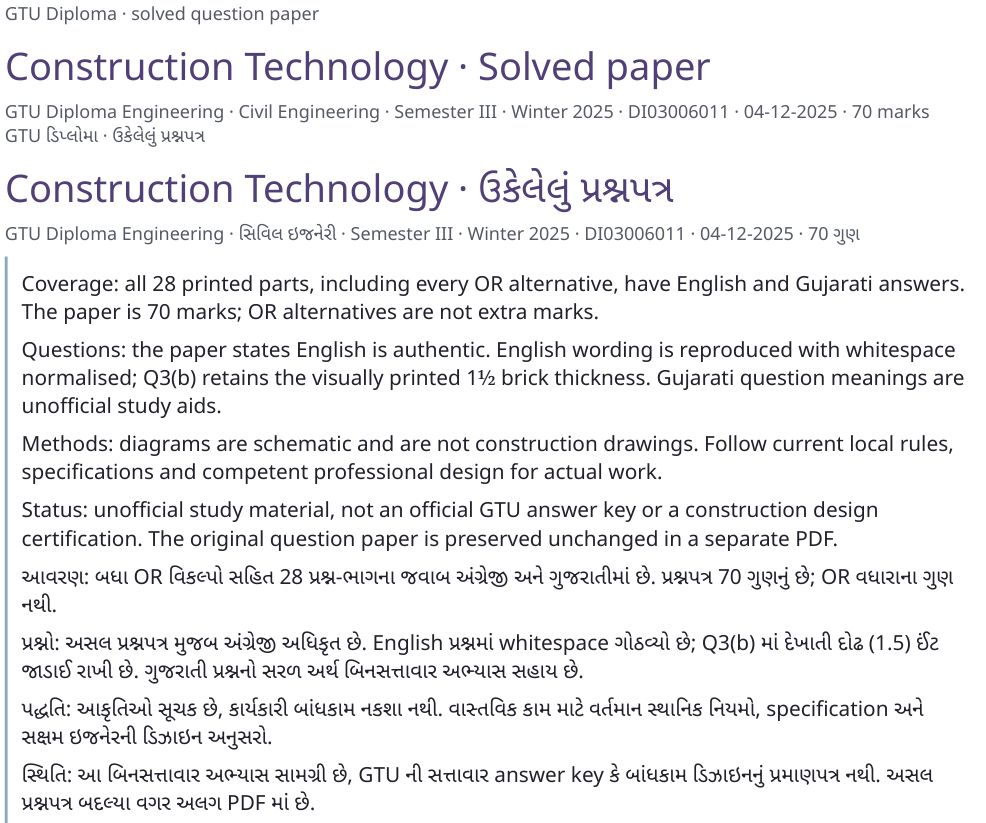
Question 1
Q1 · Building components and temporary work
Q.1 (a) · Write functions of following items in Building: Lintel, Sill, Weather sheds. · 3 marks
Element Function
Lintel A horizontal member spanning a door or window opening. It supports the wall above the opening and transfers its load to the supporting jambs at the sides.
Sill The horizontal member at the bottom of a window opening supports the frame and protects the wall below; an outward slope and drip help shed rainwater.
Weather shed / chajja
A projecting slab or shade above an opening protects the opening and wall from rain and direct sun. Its slope and drip direct water away from the wall.
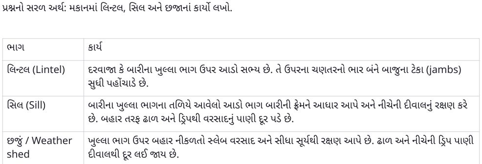
Q.1 (b) · Differentiate between Load Bearing and Framed Structures. · 4 marks
The distinction is the primary load path; both systems must be designed for their actual loads and site.
Basis Load-bearing structure Framed structure
Load path Slab/roof → structural walls → continuous footings → soil.
Slab → beams → columns → footings → soil.
Walls Load-bearing masonry walls are structural members.
Masonry is often infill/partition; the designed frame carries the main gravity load.
Openings / plan
Large openings and removal of walls are restricted by the load path.
Larger openings and more flexible partitions are often possible within the frame design.
Typical use Often economical for small, low- rise buildings on suitable soil.
Often preferred for taller buildings and larger spans; columns and beams need reinforcement and formwork.
Alterations Do not remove or cut a supporting wall without design and temporary support.
Alterations still require checking the frame, infill and lateral-load system.
Cost / performance
May use less steel and formwork for a small building.
Cost and earthquake behaviour depend on design, detailing and materials; neither is automatically superior in every case.
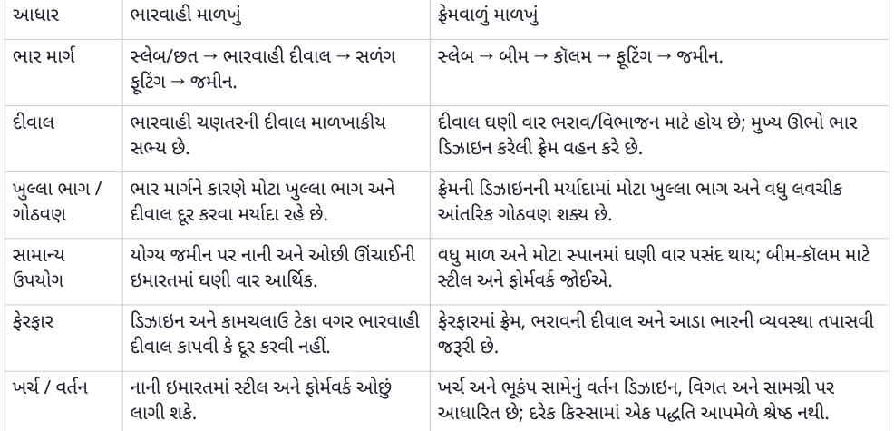
Q.1 (c) · With neat sketch explain components of Scaffolding. · 7 marks
Scaffolding is a temporary, supported working arrangement that provides access and a safe platform during construction or repair. The sketch shows a simplified single scaffold for brickwork.
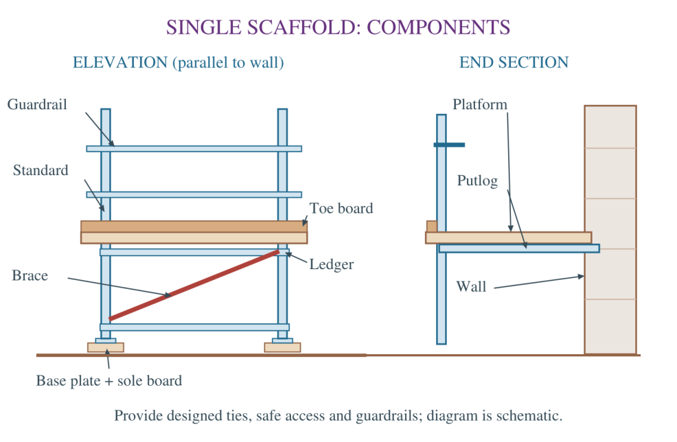
Elevation and end section; putlogs run towards the wall. Not a working design.
Main components and their functions
• Standards: vertical members that carry the scaffold loads down to base plates and sole boards on firm ground.
• Ledgers: horizontal members parallel to the wall, connected to the standards; they support the putlogs and keep the frame in line.
• Putlogs / transoms: members across the scaffold supporting the working boards. In a traditional single scaffold a putlog can bear in a prepared wall opening; proprietary systems use designed connections.
• Braces: diagonal members resist sway and maintain stability. Ties connect the scaffold to suitable anchors in the structure as designed.
• Working platform: properly supported, secured planks carry workers, tools and permitted materials. A toe board helps prevent items falling from the edge.
• Guardrails and access: top/intermediate guardrails and a safe ladder or stair reduce falls; fit them wherever required by the design and rules.
• Base plate and sole board: spread the standard load to stable ground; inspect the complete arrangement before use and after events that may affect it.
Use the designed load limit and competent erection/inspection; do not rely on an unsupported sketch for site work.
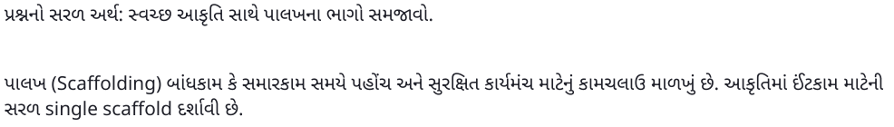
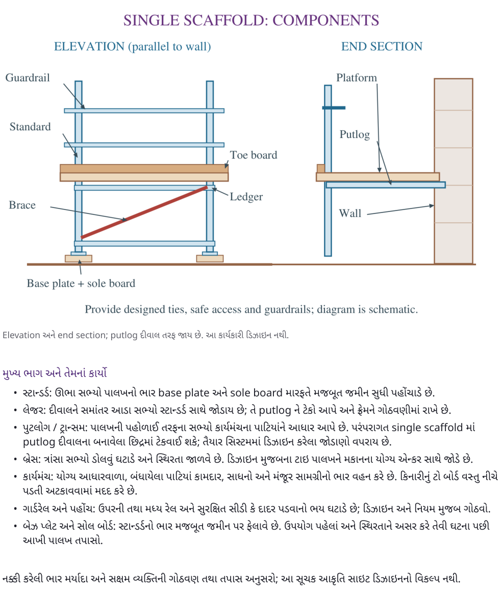
Q.1 (c) · Discuss in detail: Characteristics of good formwork. · OR · 7 marks
Formwork is the temporary mould and its supporting system that holds fresh concrete to the required shape until the concrete can support itself.
Characteristics of good formwork
• Strength: safely carry fresh-concrete pressure, reinforcement, workers, equipment and other construction loads.
• Stiffness and stability: adequate props, bracing and foundations limit movement, deflection and collapse.
• Accuracy: produce the specified line, level, dimensions, cover and surface finish; maintain position during placing and vibration.
• Tight joints: prevent loss of cement paste and formation of honeycombs; the inside surface should be clean and suitable for the finish.
• Practical assembly: permit safe access, placing and compaction; openings and inserts should be correctly located.
• Easy stripping: remove parts without shock or damage, while leaving necessary props in place. Strip only when concrete has reached the required strength and the engineer permits it.
• Economy and durability: use serviceable, reusable material where practical; components should be light enough for safe handling and properly maintained.
• Non-contaminating release: use a suitable release agent without soiling reinforcement or construction joints.
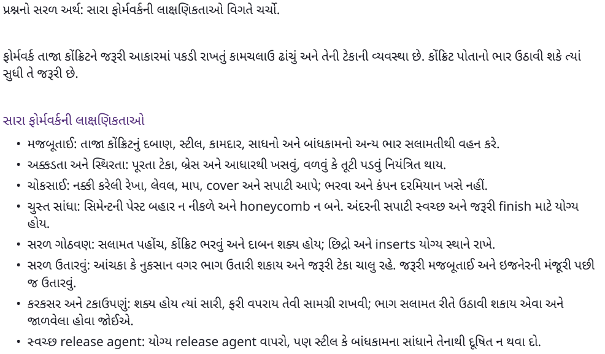
Question 2
Q2 · Foundations and temporary earth / water support
Q.2 (a) · List out the Types of Shallow Foundation and Deep Foundations. · 3 marks
Foundations transfer structural loads safely to the ground. Common types are:
• Shallow: wall/strip footing; isolated spread footing; combined or strap footing; raft/mat foundation.
• Deep: piles (including end-bearing and friction piles); drilled piers/shafts; wells or caissons.
The choice depends on load, soil profile, groundwater and allowable settlement, not depth alone.
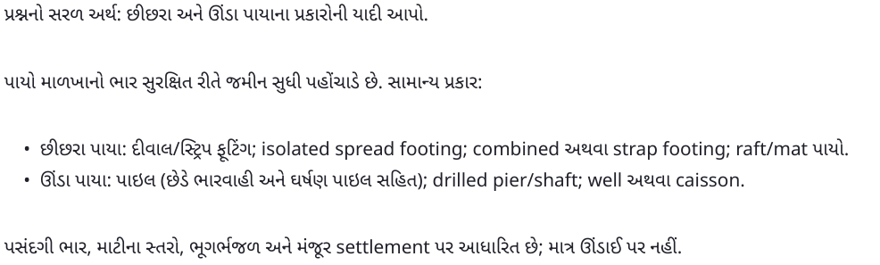
Q.2 (b) · Draw Neat Sketch of RCC Footing for Brick Masonary Wall. · 4 marks
An RCC strip footing runs continuously beneath a load-bearing brick wall and spreads its line load over a wider area of soil.
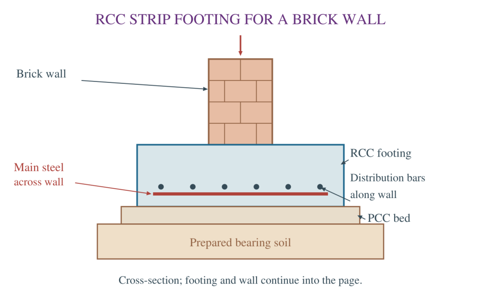
Cross-section through the wall; the strip extends into the page. Dimensions and steel are illustrative.
• The wall is centred on the reinforced footing in this simple example. The RCC footing rests on a prepared plain-cement-concrete (PCC) bed and suitable bearing soil.
• Bottom main bars run across the wall to resist transverse bending; distribution bars run along the wall. Concrete cover and anchorage are provided as designed.
• Width, depth and reinforcement depend on wall load, soil bearing/settlement, bending, shear and applicable design requirements. The sketch is not a reinforcement schedule.
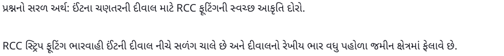
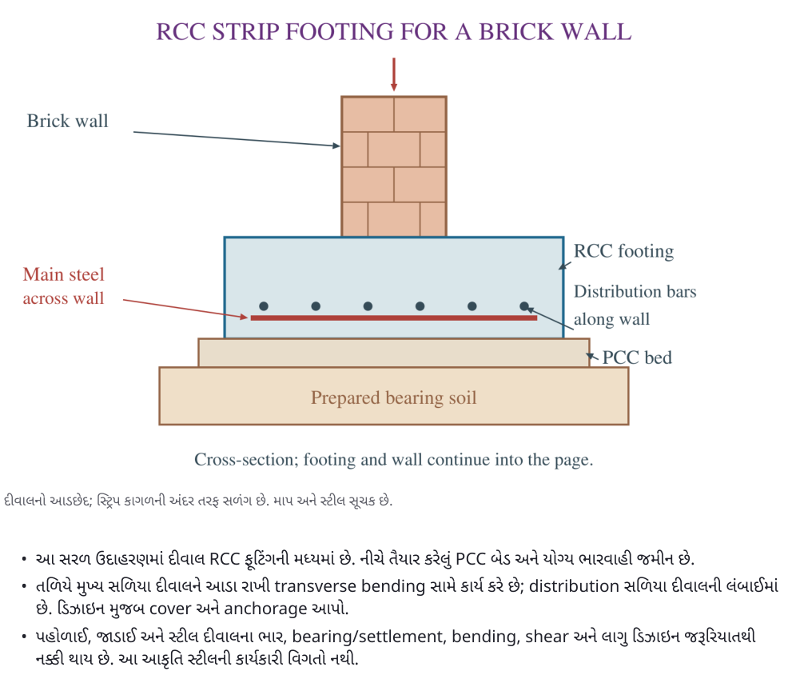
Q.2 (c) · Enlist Types of coffer Dams, Draw neat Sketch of Rock Fill Crib Cofferdam. · 7 marks
A cofferdam is a temporary enclosure that keeps water and soil out sufficiently for a foundation or other work to proceed in a dewatered area.
Types: earth-fill, rock-fill embankment, single-wall sheet-pile, double-wall sheet-pile, braced, cellular and rock-filled timber-crib cofferdams.
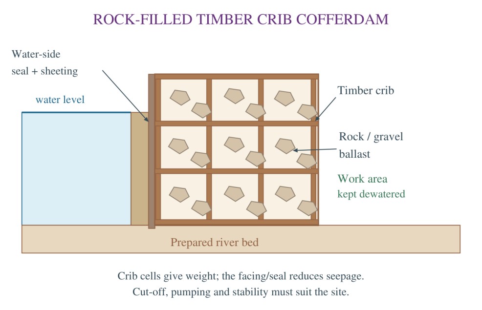
Crib cross-section: rock is held in a timber framework; the water-side sheet and seal reduce seepage.
Construction and working
1. Form interconnected timber crib cells using horizontal and cross members. Units may be assembled on land and floated to the prepared river bed.
2. Position and fill the cells with rock or gravel. The ballast weight helps resist water pressure, sliding and overturning; the crib is not just a loose rock embankment.
3. Provide water-side sheeting and a suitable impervious seal or cut-off at joints and the bed. The actual arrangement depends on the ground and water conditions.
4. Pump out seepage in stages and construct the foundation in the protected area. Monitor the enclosure, water level and supports throughout the work.
The temporary works require engineered stability, seepage and scour checks; neither the sketch nor the rock fill alone guarantees a watertight or safe enclosure.
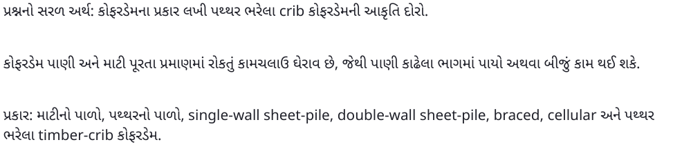
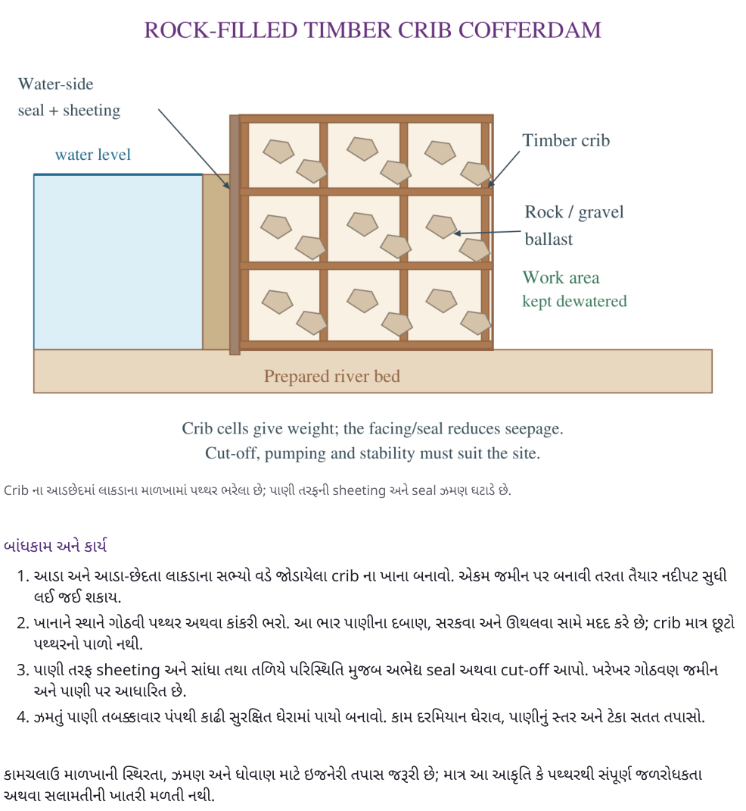
Q.2 (a) · Explain End bearing Pile with Sketch. · OR · 3 marks
An end-bearing pile passes through weak soil and transfers most of its load through its toe to a strong, dense stratum or rock.
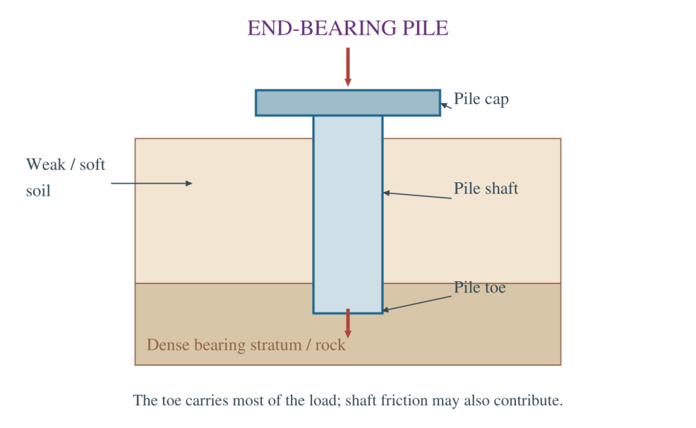
Pile cap, shaft and toe; load path is schematic.
• Load passes from the column to the pile cap, then through the pile to the firm bearing layer. Concrete, steel or timber piles may be used as designed.
• Shaft friction may also contribute; the pile is called end-bearing when toe resistance is the principal mechanism.
• Selection and capacity must consider the bearing layer, settlement, construction method and structural strength of the pile.
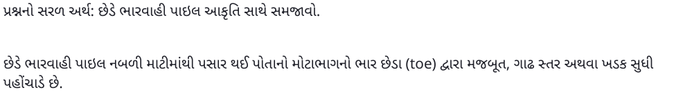
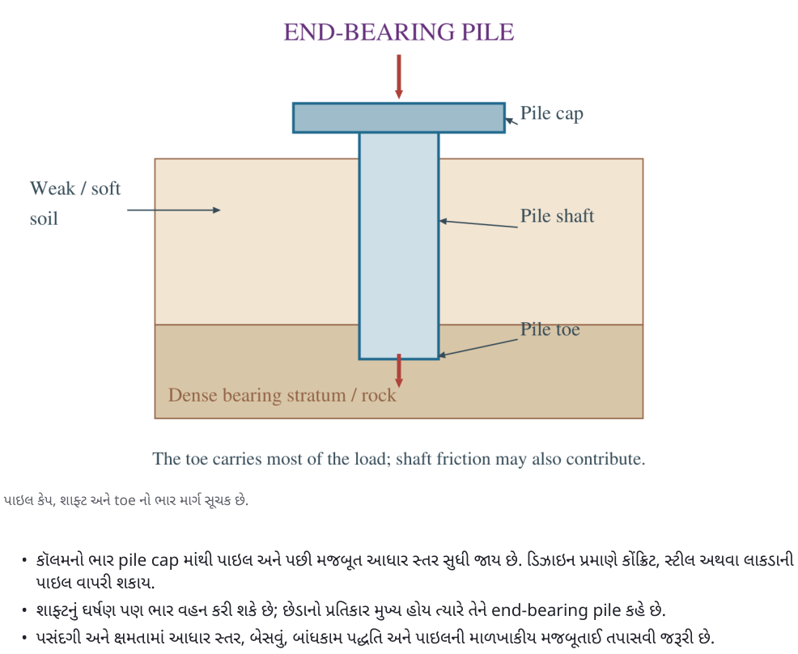
Q.2 (b) · Draw neat Sketch of Box Caisson. · OR · 4 marks
A box caisson is a foundation unit with sides, an open top and closed bottom. It is placed on a prepared bearing bed, often under water.
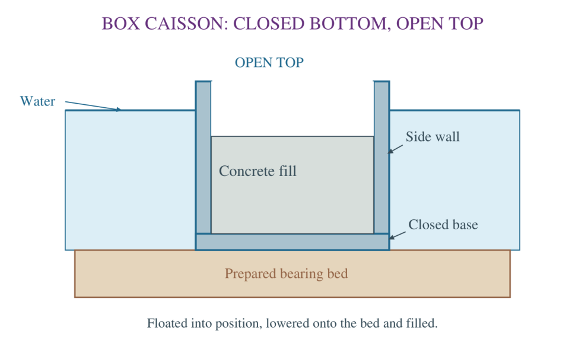
Cross-section of a closed-bottom box caisson after seating and filling; schematic.
1. Prepare and level a suitable river or sea bed. Build the watertight-bottomed box on land or in a fabrication area.
2. Float the unit to its position and lower it in a controlled way using ballast or filling; seat its closed bottom on the prepared bed.
3. Fill with concrete or another specified material and construct the pier above. The filled unit transmits the load to the bed.
Unlike an open-bottom well/caisson, a box caisson is not normally sunk by excavating soil through its bottom. Bed preparation and stability must be designed for the site.
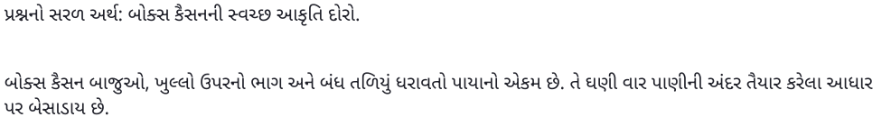
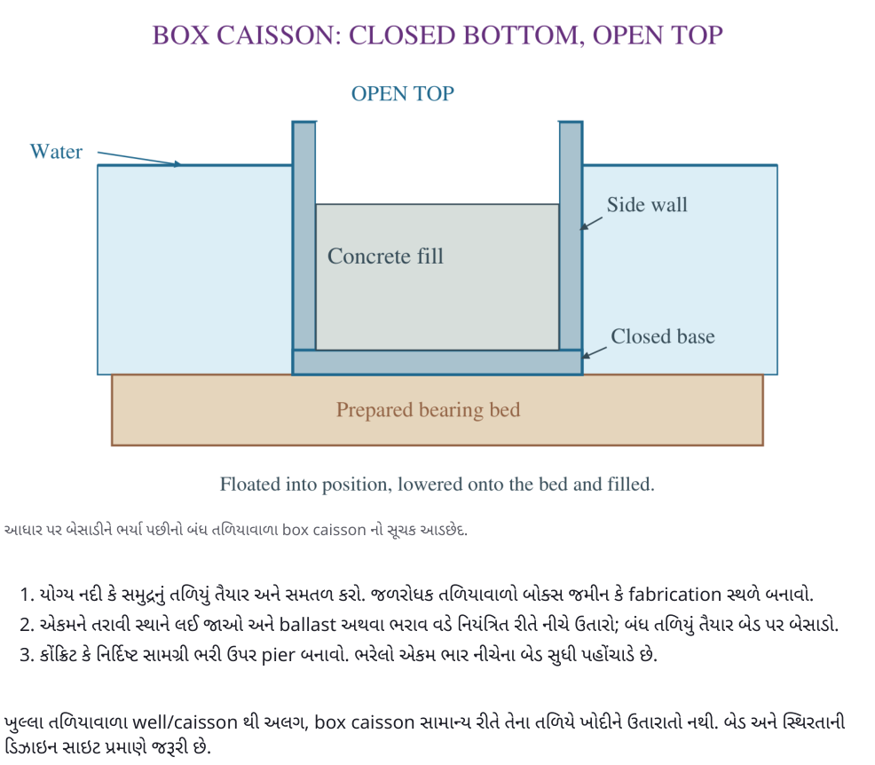
Q.2 (c) · Write Short note on Timbering of Trenches. · OR · 7 marks
Timbering of trenches is a temporary support system installed to retain the sides of a trench and reduce the risk of a soil collapse during excavation and pipe or foundation work.
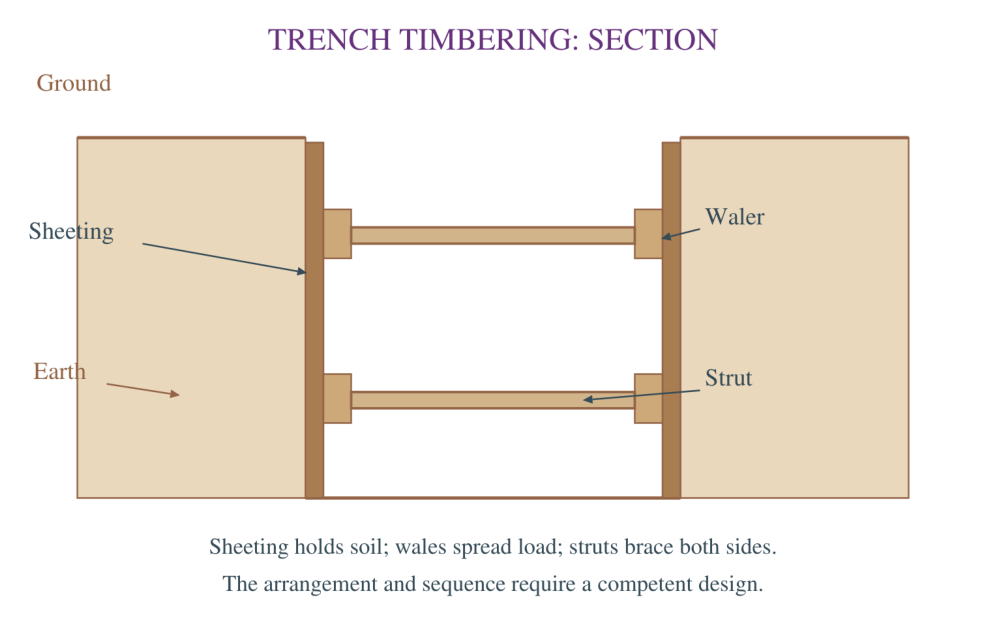
Typical cross-section; exact spacing and sequence must be designed for the soil and excavation.
Components and method
• Sheeting / poling boards: boards placed against the soil face retain loose material.
• Wales: longitudinal horizontal members spread the pressure from the sheeting to the supports.
• Struts: cross members between opposite wales brace the two sides; wedges or connections keep members in their designed positions.
• Other arrangements: stay bracing, box sheeting, vertical sheeting and runner systems are selected to suit soil, water and depth; the names do not prescribe a universal design.
1. Locate underground services and assess soil, water, nearby loads and required supports before excavation.
2. Excavate in controlled stages and install sheeting, wales and struts progressively as specified; no one enters an unsupported hazardous trench.
3. A competent person inspects supports and access. During backfilling, remove supports in the approved sequence while continuously maintaining stability.
Timbering is not a substitute for a designed protective system, safe entry, drainage and compliance with applicable local requirements.
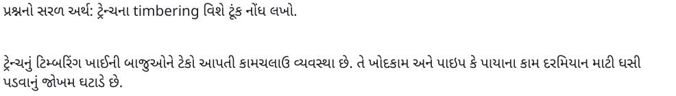
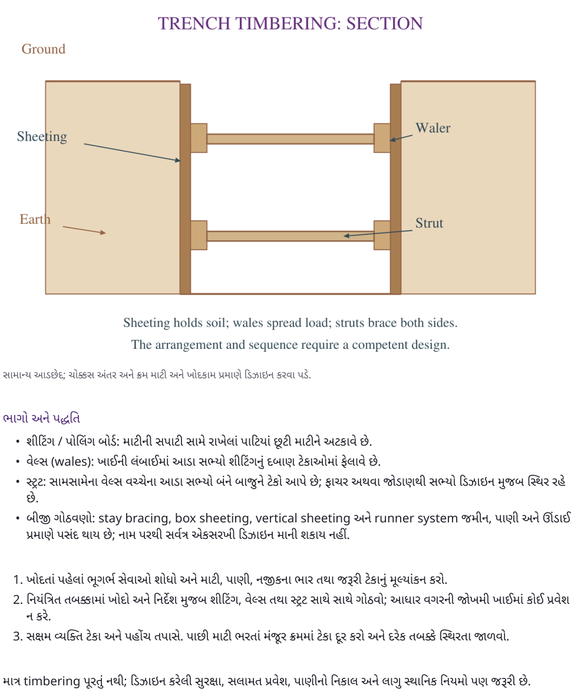
Question 3
Q3 · Brickwork, concrete and plaster
Q.3 (a) · Define with sketch: Frog, Header, Stretcher. · 3 marks
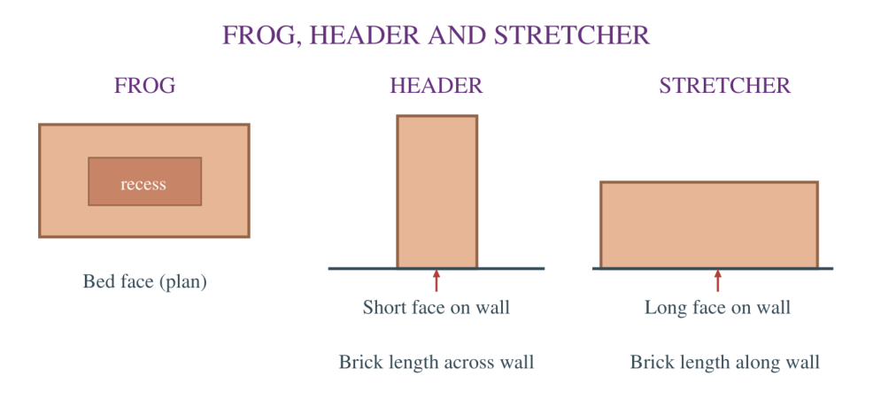
Plan views: the face line indicates the visible face of a header or stretcher.
Term Definition
Frog A shallow recess on a brick bed face. Mortar filling the recess helps form a key between brick and mortar.
Header A brick laid with its short face visible on the wall face and its length generally across the wall.
Stretcher A brick laid with its long face visible on the wall face and its length along the wall.
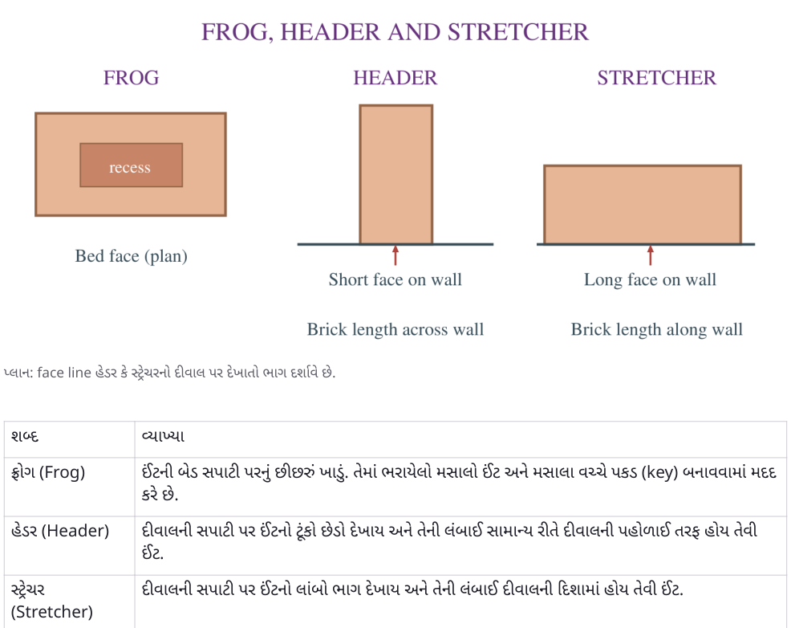
Q.3 (b) · Draw neat sketch of English Bond for 1½ Brick thick wall. · 4 marks
The original asks for 1½-brick thickness. English bond has alternate header and stretcher courses on each face. The plans below show two successive courses of an interior straight-wall segment.
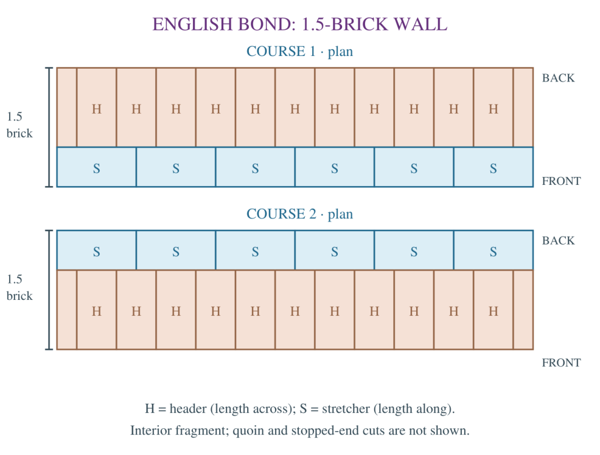
H = header; S = stretcher. The wall is three half-brick widths thick. Ends are cut through the illustration, not detailed quoins.
1. Course 1: headers show on the back face and stretchers on the front. One stretcher along the wall corresponds to two headers on the other face.
2. Course 2: reverse the arrangement: stretchers show at the back and headers at the front. The header extends one full brick length across the wall and the stretcher occupies the remaining half-brick strip.
3. Break the vertical face joints between adjacent courses and fill the bed and vertical joints with mortar. The longitudinal joint in one course is covered by bricks in the next.
4. At a quoin or stopped end, suitable cut pieces are needed; a queen closer is placed next to the quoin header in the header course to obtain the lap. The fragment shown deliberately does not depict these end details.
The drawing uses an idealised nominal brick length of twice its width; actual thickness includes the appropriate mortar joint and depends on brick size. The two plans are schematic, not a dimensioned working drawing.
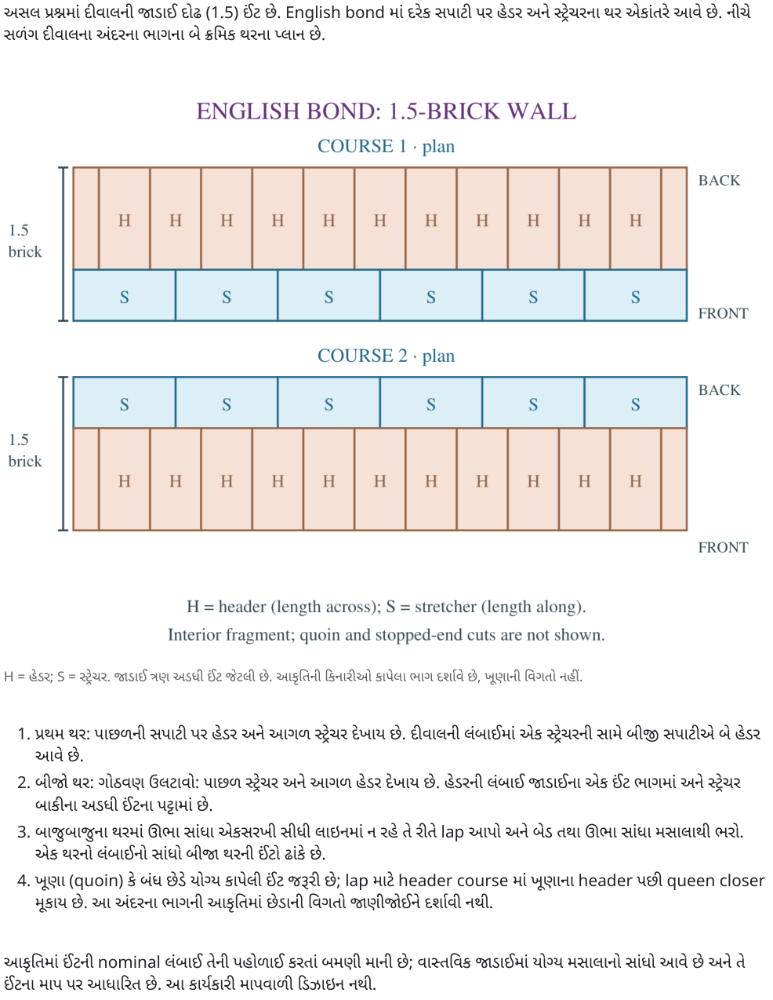
Q.3 (c) · List out Ingredients of Concrete. Explain Compaction of Concrete. · 7 marks
Ingredients: cement (binder), fine aggregate (sand), coarse aggregate and water. Approved chemical admixtures or supplementary cementitious materials may be added when specified; their proportions depend on the mix design.
Compaction is the consolidation of freshly placed concrete to expel entrapped air and fill the form around reinforcement. Proper compaction reduces voids and honeycombing and helps achieve intended strength and durability.
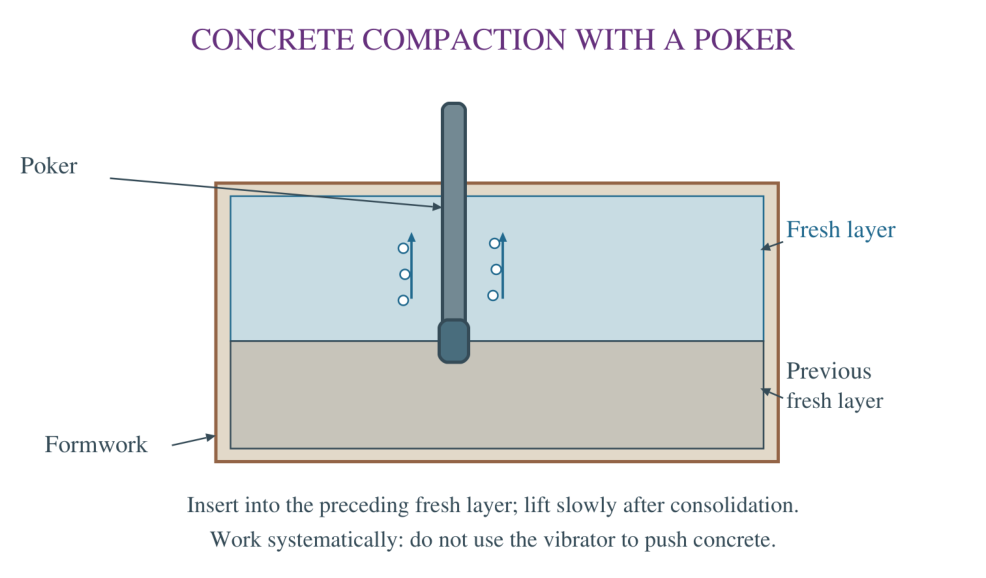
Internal-vibrator example; the preceding layer must still be fresh enough to bond.
Methods and procedure
1. Place workable concrete in suitable layers near its final position. Hand rodding/tamping may be used for suitable small work; internal needle vibrators are common in reinforced concrete. Surface vibrators/screeds and external form vibrators suit other shapes.
2. Insert the needle vertically at regular, overlapping positions. Penetrate slightly into the previous fresh layer so the two layers combine; do not force it against reinforcement or formwork.
3. Vibrate only long enough for the concrete to settle, major air bubbles to diminish and the surface to close. Withdraw slowly so the hole closes, then move to the next position.
4. Avoid under-vibration (voids) and excessive vibration (possible segregation or loss of entrained air). Do not use the vibrator to move concrete horizontally and do not add water merely to make vibration easier.
5. Finish and cure the placed concrete as specified. Self-compacting concrete and special mixes follow their own placement requirements; conventional vibration is not automatically appropriate.
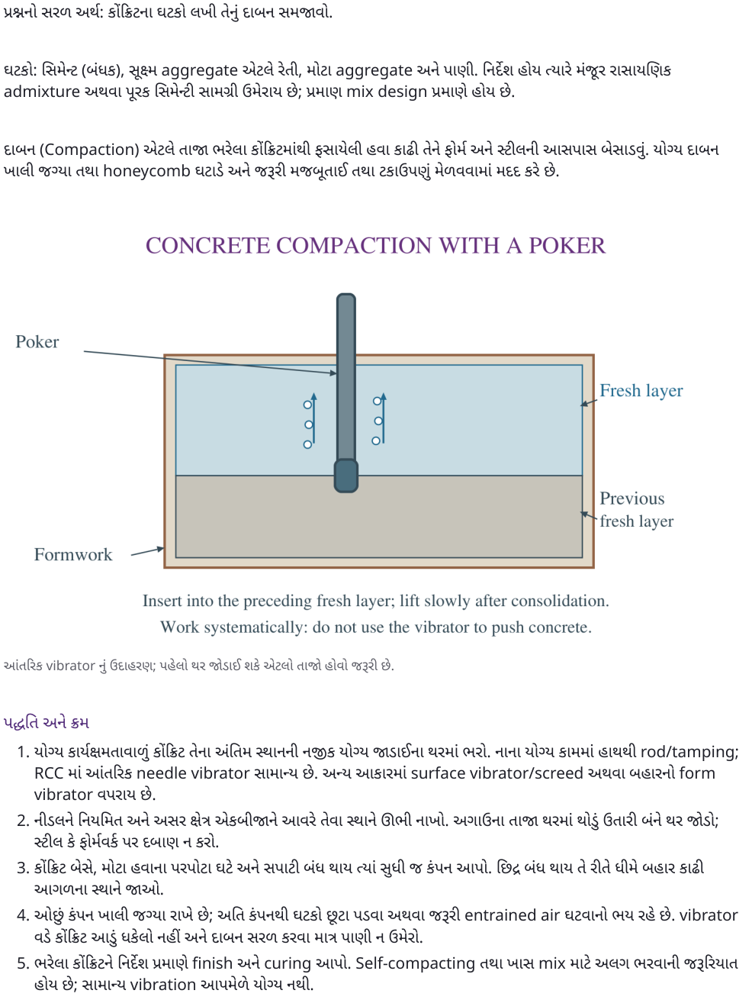
Q.3 (a) · Define with sketch: King Closer, Queen Closer, Half Bat · OR · 3 marks
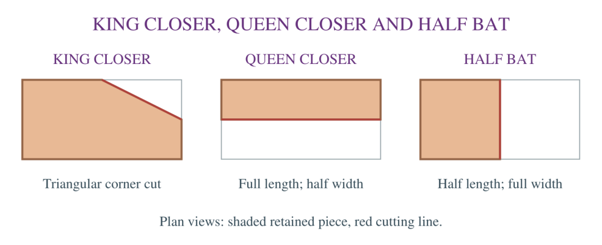
Plan view; shaded part is retained. The king closer loses a triangular corner, not the full-length bevel of a bevelled closer.
Term Definition
King closer
Brick with a triangular corner cut between the midpoint of one end and the midpoint of an adjacent long side: one end is half-width and the other is full-width.
Queen closer
A full-length brick cut lengthwise into two equal parts; each retained half has half the original width.
Half bat A brick cut across its length at the middle: the retained piece has half the length and the full width.
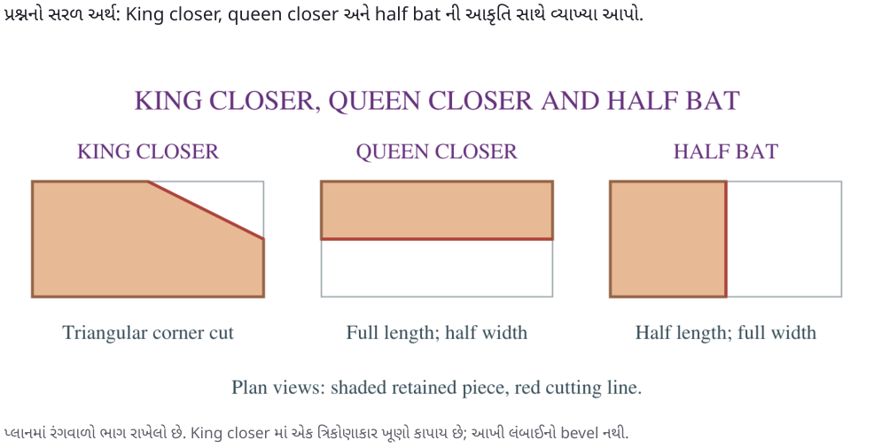
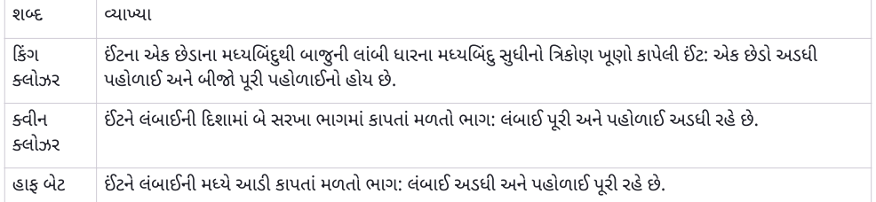
Q.3 (b) · Write Advantages of Hollow Concrete Block Masonary. · OR · 4 marks
Hollow concrete blocks are masonry units with cavities. Compared with suitable solid masonry, their potential advantages include:
• Faster work: larger, regular units cover more wall area per unit and generally require fewer bed and vertical joints.
• Lower dead load: the cavities reduce the weight of a comparable wall, subject to block density, thickness and grouting.
• Economy: fewer units and joints can reduce laying labour and mortar; actual cost depends on local supply, transport and finish.
• Thermal/acoustic performance: cavities can improve insulation in a properly designed wall assembly; performance depends on construction and detailing.
• Services and reinforcement: selected cavities can accommodate pipes or designed reinforcement and grout, subject to the block system and structural design.
Use blocks of the specified strength, provide proper mortar and curing, and protect exposed walls from water. Load-bearing suitability and fire performance must be verified for the chosen product and design.
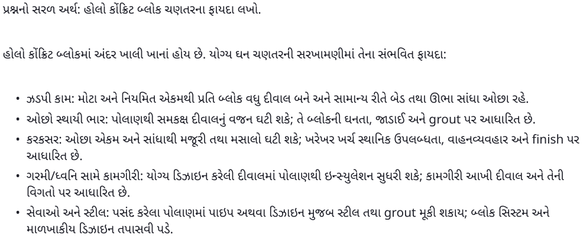
Q.3 (c) · Explain Method of Applying Sand faced Plaster on Outer Wall. · OR · 7 marks
Sand-faced plaster is an external cement-plaster finish in which clean, relatively uniform sand grains produce a textured final surface. A common method uses two coats.
1. Prepare: erect safe scaffolding; rake masonry joints where appropriate, remove loose material, dust and oil, repair defects and dampen the background without leaving free water.
2. First coat: apply and level a cement–sand base coat to the specified thickness. Scratch or score it in zigzag lines while workable to form a key for the next coat.
3. Cure the base: keep it moist for the specified period and let it become suitably firm. One textbook illustration is a 12 mm, 1:4 cement:sand base cured for seven days.
4. Finish coat: dampen the base and apply the specified finishing mortar evenly. An often- illustrated second coat is about 8 mm, 1:1 cement:sand; actual mixes and thicknesses must follow the project specification and compatibility requirements.
5. Texture: while the coat is still workable, use a sponge/float and press clean, screened, uniformly graded sand into the surface with a wooden float to produce an even sand face.
6. Finish and cure: maintain straight edges and uniform texture, protect from sun/rain and keep moist for the specified curing period. Inspect and repair defects after curing.
The mix ratios are textbook examples by volume, not universal site prescriptions. Exterior exposure, substrate, cracking and current specifications govern the actual design.
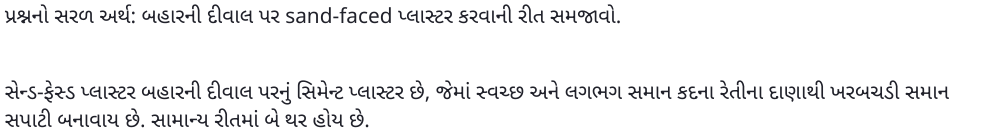
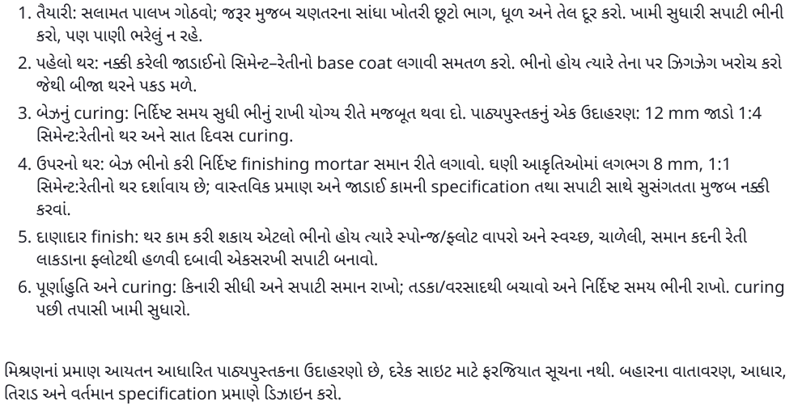
Question 4
Q4 · Building protection, joints and plant
Q.4 (a) · Explain Anti Termite treatment. · 3 marks
Anti-termite treatment prevents termites from reaching and damaging timber or other susceptible building components, commonly by creating a continuous treated or physical barrier between soil and the building.
1. Before construction, remove roots, wood debris and other termite food; inspect the site and deal with existing infestation.
2. A qualified applicator treats the foundation-trench soil and backfill, the area below the floor and junctions around walls and service penetrations, as specified for the selected system.
3. Seal gaps, keep wood away from untreated soil and moisture, and inspect periodically. If an existing building is infested, investigate and use an appropriate professional remedial treatment.
Use only locally approved products/systems and the current applicable standard and label. Professionals must protect workers, water supplies and the environment; this answer does not prescribe a chemical or concentration.
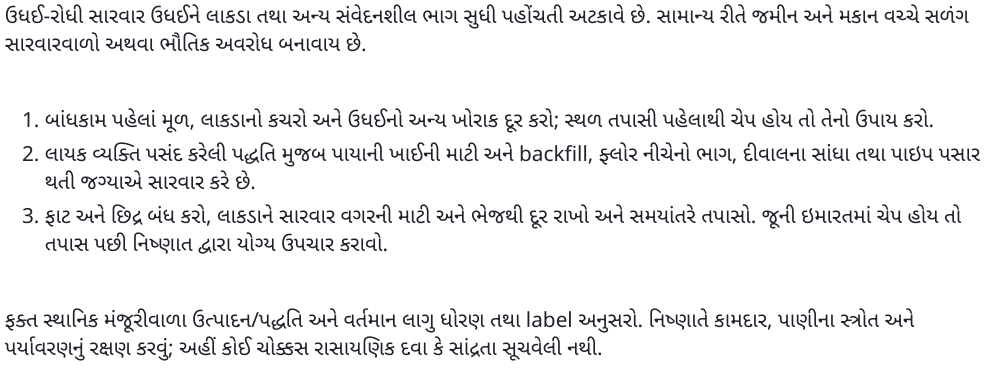
Q.4 (b) · Draw neat Sketch for DPC of Basement. · 4 marks
A basement needs a continuous moisture barrier across the floor and up the external wall. The sketch illustrates one positive-side membrane/tanking arrangement.
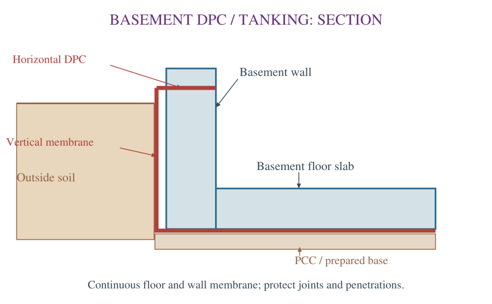
The vertical wall membrane turns beneath the floor and connects to the horizontal wall DPC; schematic section only.
• Prepare a clean, even base; lay the specified floor membrane and connect it continuously to the vertical wall membrane and the horizontal DPC above external ground.
• Seal laps, corners, construction joints and pipe penetrations; protect the membrane during backfilling and construction.
• Provide drainage where designed. Where groundwater produces hydrostatic pressure, use a properly designed waterproof tanking system, joints and structural checks: an ordinary damp- proof coat alone is not sufficient.
• The horizontal wall DPC shown is conceptual: for reinforced concrete, do not interrupt structural continuity or reinforcement; use the engineer’s detailed joint and waterstop arrangement.
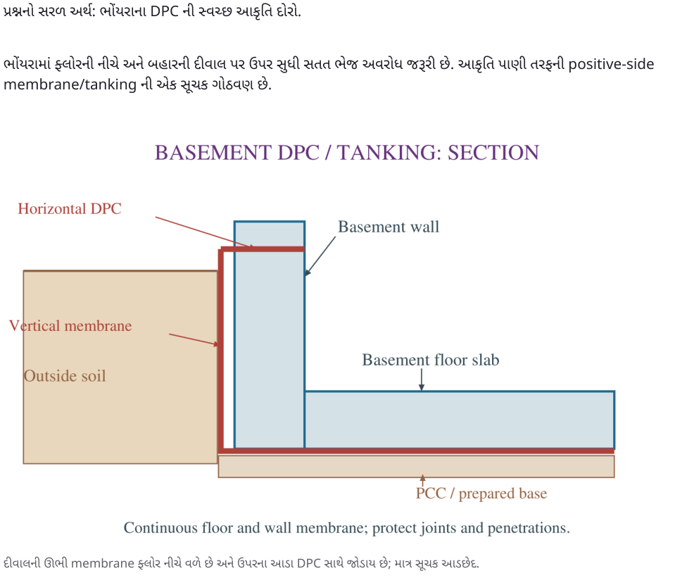
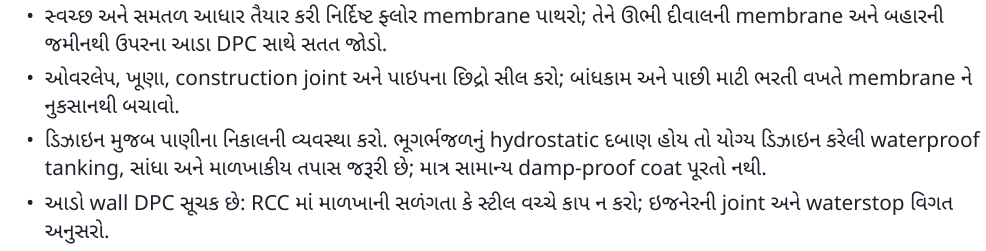
Q.4 (c) · Explain factor affecting selection of Construction Machineries. · 7 marks
Select construction machinery for the required work and total project conditions, rather than on purchase price alone.
• Nature of work and soil: excavation, lifting or compaction; hardness, moisture, groundwater and required accuracy determine a suitable machine.
• Quantity, output and time: estimate the volume and required production rate, allowance for downtime and the construction schedule.
• Site and access: space, gradients, ground bearing, overhead lines, haul distance, transport to site and weather limit feasible size and mobility.
• Capacity and compatibility: match bucket or lifting capacity and reach to the task and balance output with trucks, cranes, mixers and other equipment.
• Cost and utilisation: compare ownership, hire, depreciation, interest, fuel, maintenance and idle time over the expected use.
• Availability and reliability: consider spare parts, service support, repair time, machine condition and replacement arrangements.
• Operators and resources: trained operators, power/fuel, mechanics, access for maintenance and suitable supervision must be available.
• Safety and environment: guards, stability, load charts, noise, emissions and local rules affect selection. Versatility may be valuable when work changes.
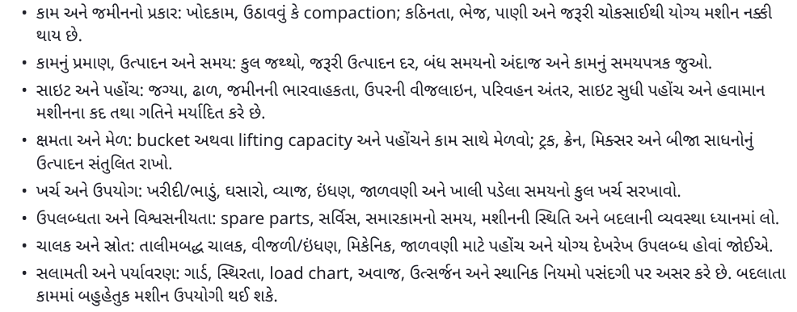
Q.4 (a) · Explain Construction Joints. · OR · 3 marks
A construction joint is the planned interface between concrete placed at different times when a pour must stop and resume. It is not the same as an expansion/movement joint.
• Locate and detail the joint at an engineer-approved position; continue reinforcement and provide keys or dowels only as designed.
• Before the next pour, remove loose material and laitance, roughen as specified, clean and prepare the old concrete surface. Use the specified bonding treatment and moisture condition.
• Place and compact new concrete well against the prepared surface. In water-retaining/below- ground work provide the designed waterstop and seal.
Good preparation provides load transfer and reduces leakage; an arbitrary, untreated stop can become a weak plane.
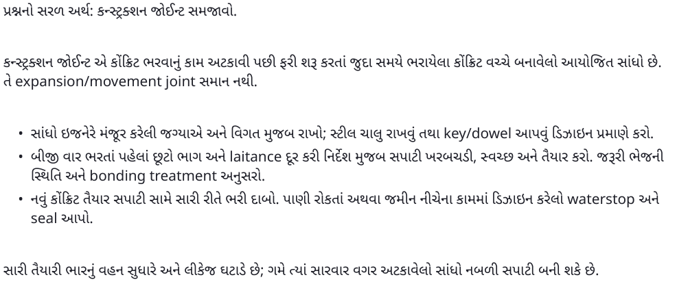
Q.4 (b) · Enlist Safety Points for plumbing Work. · OR · 4 marks
Safety points for plumbing work:
• Identify and isolate the correct water, electricity or gas service; release pressure and verify the line is safe before cutting. Gas work requires an authorised competent person.
• Wear suitable gloves, eye protection, safety footwear and other task-specific PPE; use sound, properly guarded tools.
• Secure ladders and platforms, support heavy pipes and keep the floor clear of water, offcuts and trip hazards.
• For soldering or hot work, control ignition sources, ventilate and keep suitable fire protection. Do not work close to live electrical equipment.
• Use a permit and atmospheric testing where a confined space is involved; provide safe trench support and access for buried pipework.
• Test joints for leaks under the approved procedure and restore the service safely; prevent contamination of drinking-water lines.
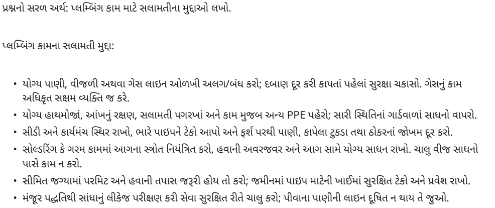
Q.4 (c) · Write short note on Clam shell. · OR · 7 marks
A clamshell is an excavating grab made of two hinged jaws suspended from a crane or excavator. The jaws resemble the two shells of a clam.
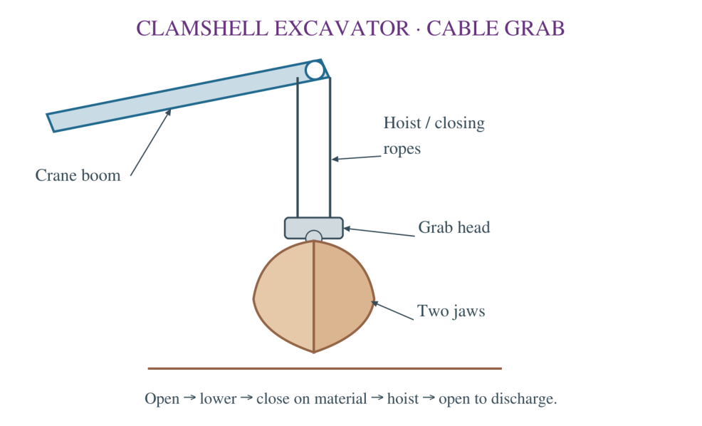
Schematic cable-operated grab in the closed position; actual mechanisms vary.
Construction and working
• Components: boom, hoisting and closing arrangements, grab head, hinged jaws and cutting edges; the machine rotates or swings to the dumping point.
• Cycle: open the jaws, lower the grab into the material, close the jaws to seize it, lift and swing, then open to discharge. Repeat.
• Uses: deep narrow excavations, wells, foundations, dredging and handling loose sand, gravel or similar material where vertical digging is useful.
• Advantages: can lift from below machine level, work in restricted/deep locations and handle some underwater material.
• Limitations: less suitable for hard rock or strongly compacted material and generally gives less precise cutting than a controlled excavator.
• Safety: check the machine load chart and ground support; inspect ropes and jaws, establish an exclusion zone and keep people clear of the suspended grab.
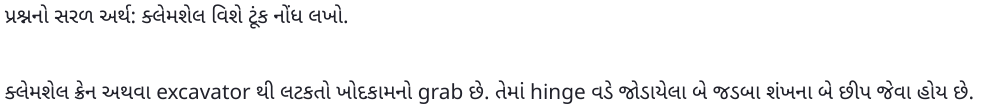
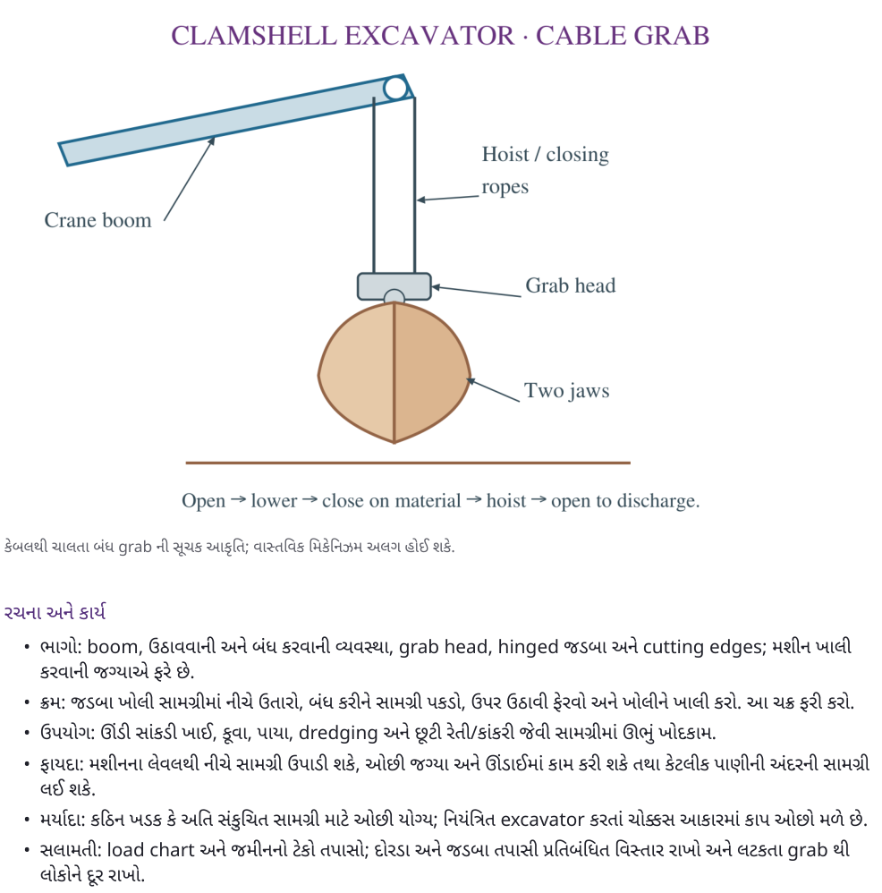
Question 5
Q5 · Maintenance, building technology and site safety
Q.5 (a) · What are the purpose of Maintenance of Buildings ? · 3 marks
Building maintenance is the planned inspection, servicing and repair needed to keep a building usable and safe throughout its life.
• Preserve structural safety, serviceability and the intended life of building components and services.
• Detect and correct dampness, cracks, corrosion and other defects early, before deterioration or repair cost increases.
• Maintain appearance, hygiene, comfort, reliable services and property value; satisfy applicable safety requirements.
Preventive work is scheduled before failure; corrective work repairs defects already found.
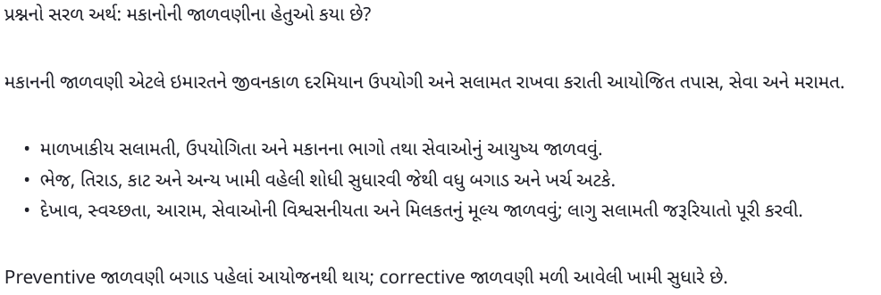
Q.5 (b) · Write advantages and disadvantages of Green Building Technology. · 4 marks
A green building aims to reduce resource use and environmental impacts while providing a healthy, usable indoor environment over its life cycle.
Advantages Limitations / disadvantages
Efficient lighting, envelope and equipment can reduce operating energy and bills.
Initial design, efficient equipment or certification may increase upfront cost.
Water-efficient fixtures, rainwater use and reuse can reduce demand for fresh water.
Specialist design, installation and maintenance skills or local materials may be limited.
Daylight, ventilation and low-emission materials can improve indoor comfort when properly designed.
Poor operation or maintenance can prevent the predicted savings; monitoring is needed.
Appropriate material choice and waste management can reduce life-cycle impacts.
Benefits depend on climate, sourcing and the whole life cycle; a green label alone does not guarantee performance.
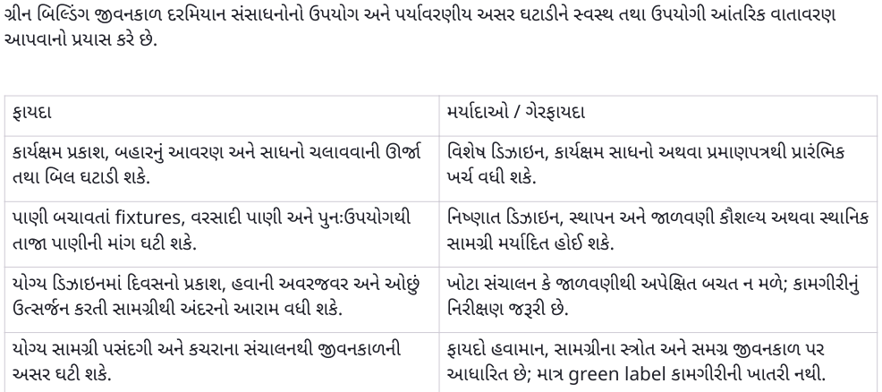
Q.5 (c) · Explain Physical Causes of Accidents in Construction. · 7 marks
Physical causes are hazardous conditions or energy sources at a site that can lead directly to injury. Examples and controls include:
• Falls from height: open edges, openings, defective ladders or unsafe scaffold platforms; provide guardrails, covers and suitable fall protection.
• Falling objects: loose tools, materials or suspended loads can strike workers; secure loads, use toe boards and keep people out of lifting zones.
• Collapse: unsupported excavation, unstable scaffold, incomplete formwork or stored material may fall; use designed supports and inspections.
• Moving plant and machinery: vehicles, rotating parts and pinch points can strike or trap people; provide separation, guards and trained operators.
• Slips and trips: debris, protruding bars, trailing cables, uneven or wet surfaces; maintain housekeeping, clear routes and adequate lighting.
• Electrical contact: exposed wires, damaged tools or overhead/underground services can cause shock or burns; isolate and protect circuits.
• Fire, heat and harmful exposure: hot work, fuels, dust, noise and excessive heat can cause burns or illness; control sources, ventilate and use suitable PPE.
• Poor site conditions: inadequate lighting, flooding or adverse weather increases other hazards; inspect and suspend unsafe work when required.
These are physical conditions, not merely statements that a worker was careless. Assess the site, eliminate hazards first and use PPE as an additional protection.
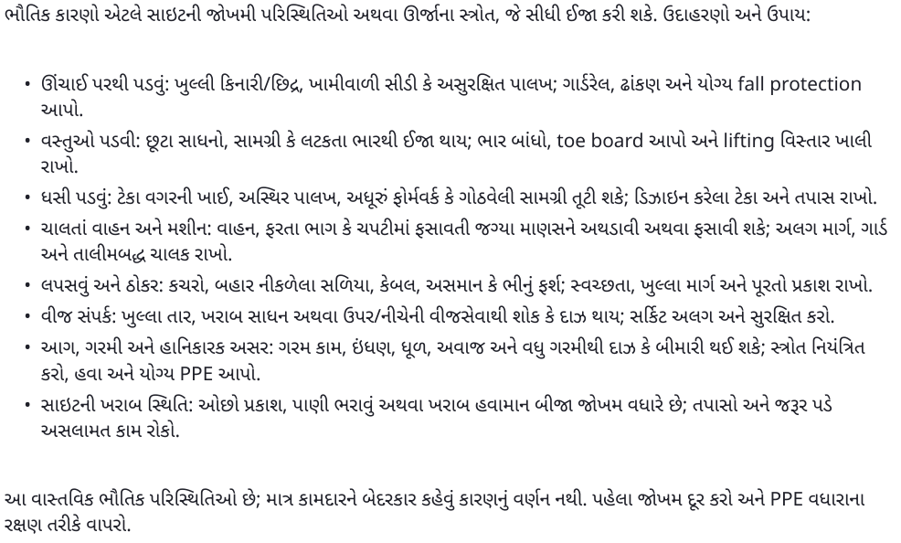
Q.5 (a) · Explain Repairing of Plaster. · OR · 3 marks
Repair plaster only after finding and correcting the cause, such as a leaking pipe, dampness or movement; otherwise the defect may return.
1. Tap and mark loose or hollow plaster; remove it to a sound edge. Clean dust and loose mortar, rake joints where appropriate and dampen the background.
2. Repair cracks or substrate defects with compatible material; use mesh at dissimilar-material junctions where specified. Seek structural advice for significant or active cracks.
3. Apply compatible repair mortar in suitable coats, finish flush with the surrounding work and cure/protect it as specified. After drying, restore the paint or other finish.
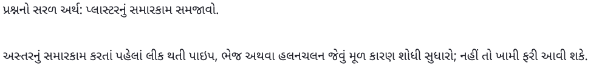
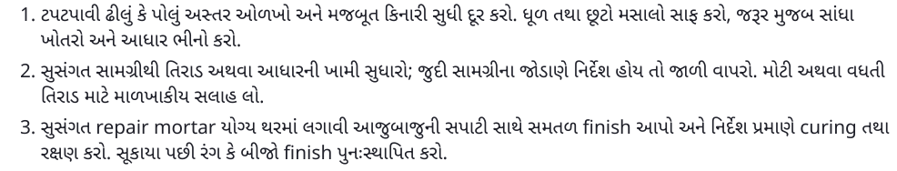
Q.5 (b) · Write advantages and disadvantages of Pre-Fabricated Construction. · OR · 4 marks
Prefabricated construction makes building components in a factory or casting yard, transports them to the site and assembles them using designed connections.
Advantages Disadvantages / limitations
Factory control can improve dimensional accuracy and consistent quality.
Moulds, production facilities, handling equipment and cranes may require high initial investment.
Parallel factory and site work can shorten the programme and reduce site labour.
Transport dimensions, road access and lifting capacity limit component size and delivery.
Repetition can reduce waste and improve productivity and site safety.
Connections, tolerances and weatherproofing need careful design and quality control.
Standard units can be produced repeatedly in suitable projects.
Late changes and non-standard shapes can be costly; temporary stability during erection is essential.
Q.5 (c) · Explain Safety in Excavation. · OR · 7 marks
Excavation safety begins before digging and continues until the excavation is backfilled. Collapse can occur suddenly even in apparently firm soil.
1. Plan and locate services: obtain permissions, identify and mark underground cables, pipes and nearby structures; isolate or protect services as required.
2. Assess the ground: a competent person checks soil, depth, water, adjacent loads and access. Inspect before work and after rain, vibration or any change that could affect stability.
3. Prevent cave-ins: use a suitable slope/bench, designed shoring or a protective trench box as required by the soil and applicable rules. Do not enter an unprotected hazardous excavation.
4. Control edges and traffic: barricade and light the area; keep vehicles, excavators, spoil and materials back from the edge by the distance required in the site design. Use a banksman where appropriate.
5. Provide access: use secured ladders or another safe means of entry and exit. Do not work beneath suspended loads or within the reach of operating machinery.
6. Control water and atmosphere: prevent flooding and undermining, dewater safely and monitor supports. Test and ventilate when hazardous gas, oxygen deficiency or a confined-space risk is possible.
7. Emergency and PPE: provide a rescue plan, communication, hard hat, footwear and task- specific protection. Never enter a dangerous excavation for an unplanned rescue; summon trained responders.
8. Backfill: remove temporary supports only in the approved sequence while filling and maintaining stability; protect adjacent structures throughout.
Use the applicable Indian/local requirements and the engineer’s protective-system design. A schematic answer cannot set a universally safe depth or setback.